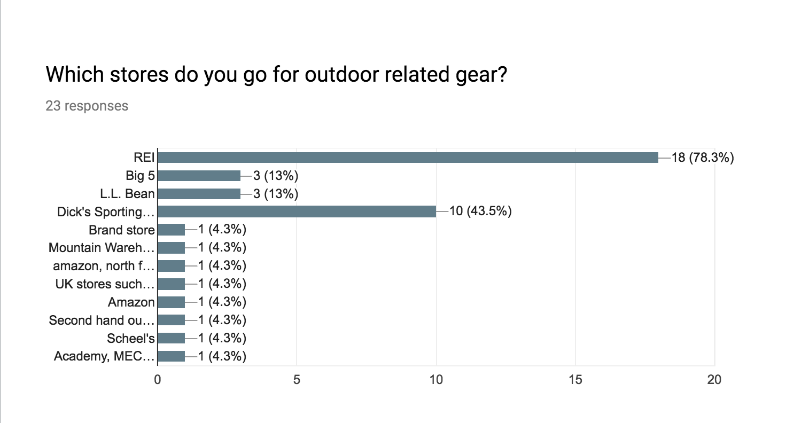
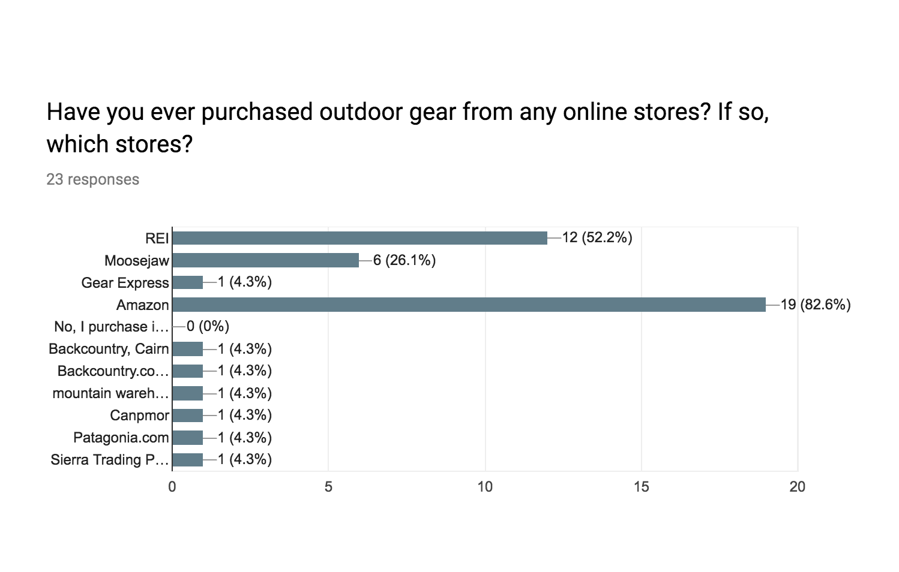
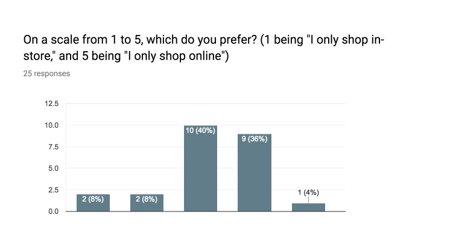
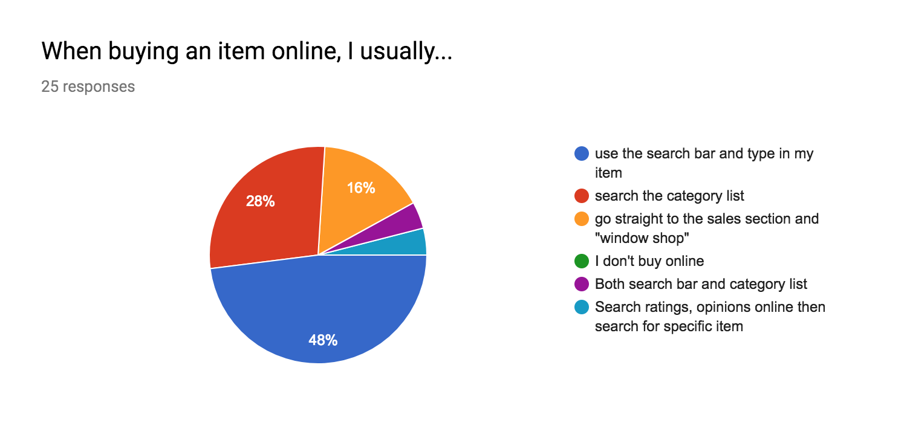
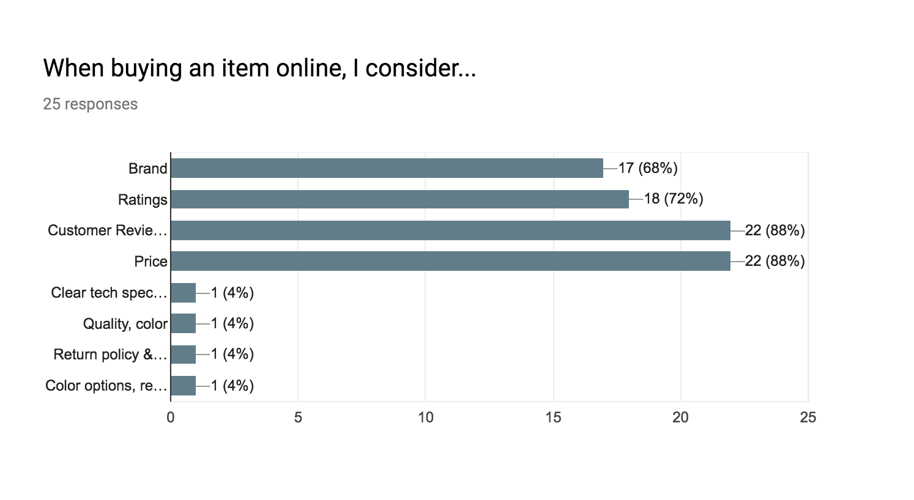
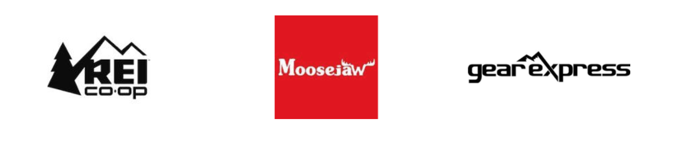
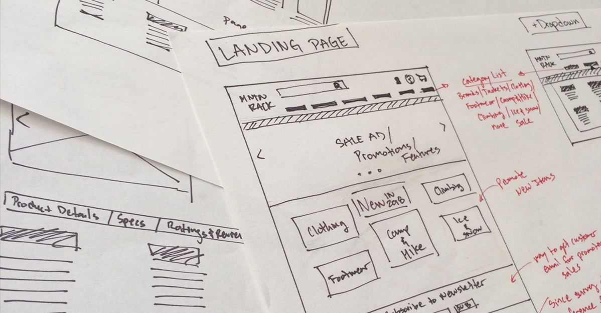

Integrity. Trust. Stability. A reliable company that gives back.
Mountain Rack is a new online retailer specializing in outdoor recreation apparel and gear for rock climbing and camping. Their mission is to provide reasonably priced, quality product, with a percentage of sales going towards children and environmental charities.
Challenge
To successfully compete against well established and renowned companies, such as REI, Patagonia, and Big 5.
Solution
Focus on mountain climbing and outdoor related gear rather than encompassing all outdoor sports. Create an inclusive brand that mimics a trusted and established brand.
Research
erstanding the User
To begin, I rationalized three themes that I considered throughout the discovery phase of this project:
1. Frequency - how often a user would purchase any outdoor related gear.
2. Affinity - a user’s preference between online and brick and mortar stores and their reasoning
3. Mental Model - the entire process of purchasing an item, from initial conception to entering the website and purchasing an item to the time a customer receives the item.
I constructed a Google User-Survey around these three themes to help me understand the competitive market and possible users. With 24 recorded results, there was a decent sample distribution with an average age of 30 years old from the USA and UK, and about 40% male and 60% female. In order to understand the frequency, I gathered data from users who purchase outdoor related gear at different rates.
 REI being prevalent in both online (78.3%) and brick and mortar (52.2%), and Amazon showing a strong result in the online space (82.6%), these were key indicators on understanding Mountain Rack’s competition.
Users showed an affinity towards online shopping over in-store shopping for its convenience and product availability. It is worth noting that users leaned towards an in-store experience for the ability to touch, feel, and try-on the products. Being strictly an online store, Mountain Rack will need to have features and information to compensate for the lack of physical product interactions.
These results aided me in understanding a user’s mental model. The search field and browsing options were the two most common first interactions when users visited the landing page. For Mountain Rack’s design, these two functionalities needed to be clear, intuitive, and easy-to-use. Sales was also highly mentioned, so creating easy navigation and proper Ad/Sale design assets was also important.
Understanding what information a user relies on before making a purchase helped refine the information architecture of the website. Since users considered Price (87.5%), Customer Reviews (87.5%), Ratings (70.8%), and Brand (66.6%) the most, it was important for me to develop an experience that emphasized these product’s qualities, while maintaining readability and ease of navigation throughout the site.
erstanding the Competition
REI, Moosejaw, and Gear Express were chosen for their varying presence in the outdoor related gear marketspace. REI was found to be a popular destination for both their B&M and online stores. Moosejaw was honorably mentioned for their online sales, and also has nine B&M stores nationwide. Gear Express is a lesser known online company which emphasizes climbing related equipment.
In addition to a SWOT Analysis, my process for competitive analysis was to try and purchase an item on each website. During this process, I paid close attention to:
1. Content placement - to determine what was visible on the screen and question why would it be there
2. Navigation - to use the search and browsing feature, and take notes on button layout, placement, and functionality
3. Categories - how dropdown lists, filters, and tags were managed
4. Checkout - to experience their process of purchasing an item.
By approaching the analysis this way, I was able to easily compare and contrast each website, seeing and experiencing what each site did well and did not do well. View Competitive Analysis
ntifying the User

I went to my local climbing gym to conduct casual interviews to possible Mountain Rack users. I followed the same thought process as my initial user survey, but received more insights on personal pain-points they had with their current methods of purchasing outdoor gear. I developed four fictional user personas that embodied the sum of user interviews. I went back to my three themes and created user personas that focused on their frequency, affinity, and mental model. I used these personas as guidelines to continuously double-check my decisions throughout the design process. View User Personas
eloping User Flows

Staying in line with the user stories, I wanted to focus on three processes for the MVP: searchability, browsability, and checkout. Additionally, I wanted to try and resolve a few pain-points discovered during user interviews: filtering refresh, quick view, and comparing items.
Organizing the flows by importance helped me prioritize features and manage my time efficiently when moving forward towards wireframing, mockups, and prototype. I was able to incorporate all three “nice-to-have” features into the invision prototype.
Branding
eloping Brand Identity
Entering the outdoor and climbing gear market, I wanted to create a brand that all outdoors enthusiast could identify with. Even though Mountain Rack is a new company, I wanted the brand the hold the same value as an established brand – integrity, trust, and stability. The name Mountain Rack comes from climbing terminology, where “a rack” is used to reference a climber’s gear that is clipped their harness. Sure enough, a climber’s rack hold the exact same values as the brand – integrity, trust, and stability. View Logo Process

The logo uses DIN 2014 Bold for its clean lines, thin, but strong weight, and similar angled strokes throughout the typeface. The heavy weight of the mark, representing mountain peaks, a tent, and a moon, emphasizes integrity and stability. Even though “Mountain Rack” has ragged right, the weight of the mark and presence of the line holds the type together. Early iterations lacked brand identity, so by creating a unique mark, Mountain Rack can now gain and maintain trust from future.
I then created a style tile to start implementing color and type for design mockups. Instead of spending time creating an entire style guide, I opted for a style tile for its simplicity and versatility. It was still too early in the process, so changes in type and layout were so frequent that I needed a format to change along with them.

Keeping with the idea of a modern-traditional aesthetic, I wanted to keep the site rooted to the outdoors. I kept the color palette simple with a couple green colors for background a secondary button colors and a mustard yellow color for call-to-actions. I reserved the use of color to keep the content the main focus and to avoid confusion and clutter throughout the user experience.
I chose Roboto Slab typeface for large headers and Roboto typeface for small headers and body copy. Roboto slab’s utilitarian serif style allowed for good contrast and legibility, and reminded me of outdoor campgrounds. Roboto paired well with it’s slab serif counterpart, providing easy-to-read body copy. Additionally, Roboto’s large font family created an effective way to provide contrast and good hierarchy, i.e. the ability to choose from thin, light, regular, medium, bold, and black.
Execution
eframes
When creating wireframes, I started by sketching layouts for the most content heavy screens: the Landing Page, Search Results Page, and Product Page. By doing so, I was able to tackle the bulk of the IA (information architecture) earlier on. From there, I began developing low fidelity wireframes with Sketch. I found that ecommerce sites naturally hold too much information for me to effectively create complete paper prototypes in a timely manner. Using Sketch allowed me to add, move, and delete objects and type quickly, generating more design iterations faster. Additionally, I referred back to my competitive analysis to examine my competitors’ design strengths and weaknesses.

Using the user flows created earlier, I began organizing the content’s hierarchy. I started with the landing page and ended with an order confirmation screen, keeping navigation a top priority. For the product list page, I also attempted to solve the user pain-points of filtering and comparing items.

r Interface Designs

Once the general flow was refined with A/B and usability tests as wireframes, I started to incorporate the style tile elements into Sketch. Another round of refinement and iterations were done in order to check if the site was on-brand. When the main artboards were complete, I added additional screens to increase user interactivity for the Invision prototype.

r Testing and Redesign
The Invision prototype was used to test the MVP for brand alignment, user-story success rate, and unforeseen pain-points. I walked users through the tasks of locating an item, either with the search bar or categories, filtering search results, adding an item to the cart and checkout. Throughout this process, I asked participants to vocalize their reactions when navigating and reaching new screens, while taking note of any cursor movements and clicking activity. In addition, I would ask the user to elaborate on their decision making. For example, why one would click the category “Climbing Shoes” instead of a gender specific category of “Men’s Climbing Shoes” or “Women’s Climbing Shoe.”
Users were able to successfully complete all of the tasks with little to no difficulty. The only navigation issues that I witnessed were on the Landing Page. When asked to search for a climbing shoe, a couple users clicked Footwear instead of Climbing. Both users were non-climbers, so when asked why they chose Footwear, they responded that that was the most logical to them. When testing climbers, they instinctively went to the Climbing category. When asked why, they acknowledged that climbing shoes were “always there.” Referring back to Mountain Rack’s brand being geared towards more climbers than non-climbers, this may not be an issue in production. On the other hand, if Mountain Rack would ever want to branch away to new users, card sorting sessions may be beneficial when reorganizing the header navigation.
Another Landing Page issue was due to a brand banner showcasing available brands as a white logo against a black background. One user, when asked to scroll down, stopped at the brand banner thinking that was the end of the page. When asked why, she stated that she usually shops on mobile and believed it was the footer of the webpage. As a solution, I added some texture to the black to increase contrast when scrolling and add a different element than the header and footer.


Overall, participants found Mountain Rack to be familiar and easy to use. They were able to intuitively navigate through the prototype without any major issues. One user expressed the landing page could use more contrast, so for the final version I added more background images and overlay to create a more unique and engaging experience.
Learnings
lections and Takeaway
I started the Mountain Rack project because I wanted to understand the ecommerce space as a UX designer. What I found was the difficult task of effectively and efficiently relaying information between company and customer. Ecommerce companies literally reframe the experience of shopping in-store to online, attempting to recreate a way for users to “walk” between items and sections with ease, while being able to understand a product and be incentivised enough to purchase it.
With that said, creating the UI for an ecommerce site requires repeatable uniform precision. Items, photos, descriptions, or any object needs to fit and fall in a repeatable place on all associated pages. This not only makes creating the UI easier for designers, but also helps developers create a site without a lot of diversity – adding assets without affecting other objects.
In a marketing perspective, Mountain Rack should provide many reassurance benefits if the company wants to compete with brick and mortar locations, e.g. free shipping, price matching, and promotional gift cards. By doing so, the company may get a new type of user, one who goes tries on clothes or gear to only buy online later.
Finally, to further understand the balance of proven and innovative designs. With ecommerce sites, “reinventing the wheel” would create a confusing user experience. Keeping a clear header navigation will always be best practice, because as a new or returning user, that will be where the most initial activity will occur.